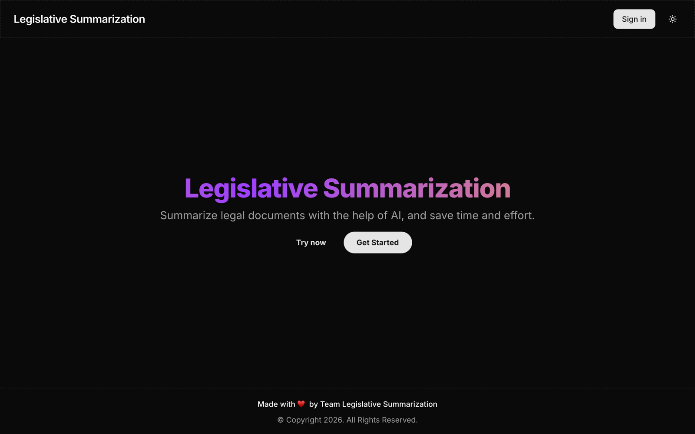
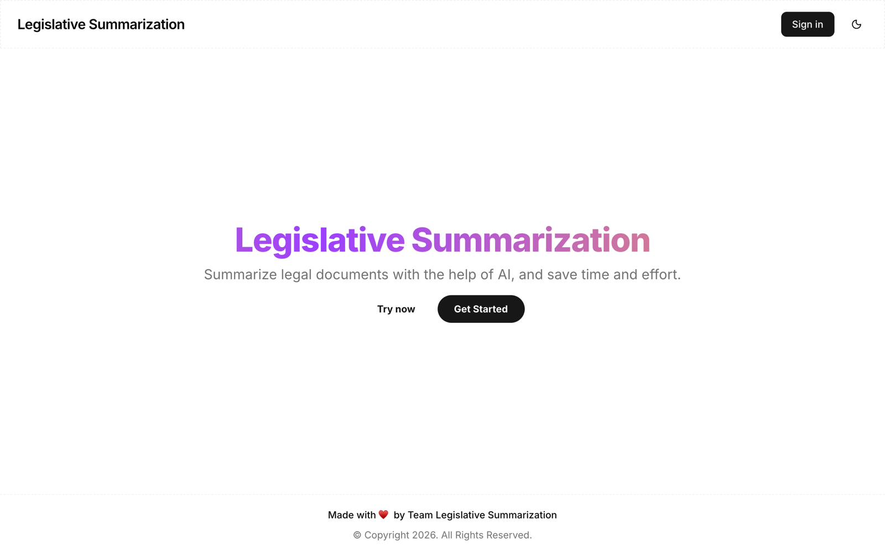
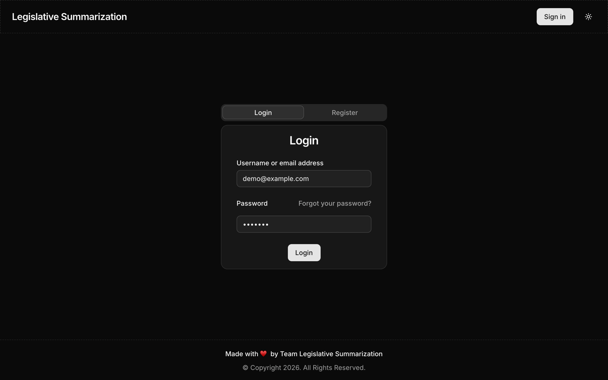
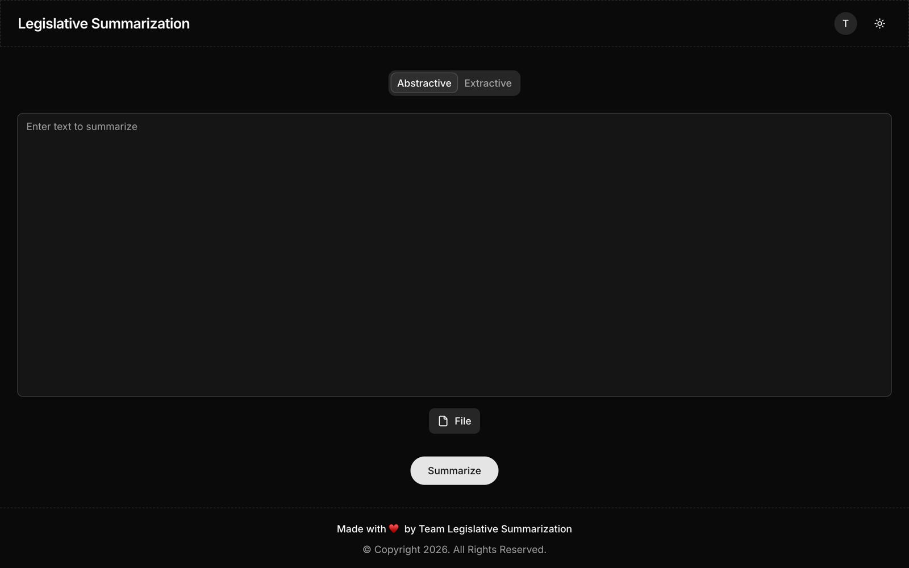
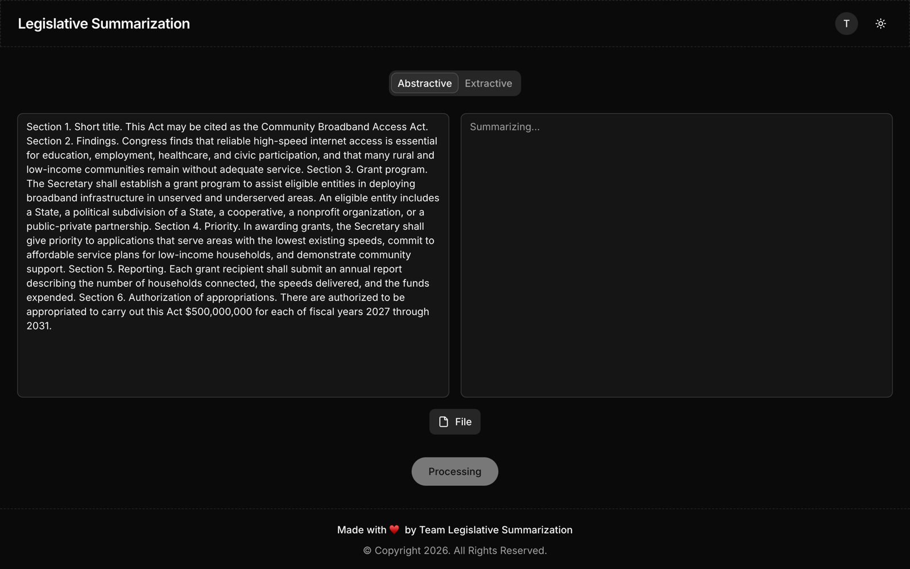
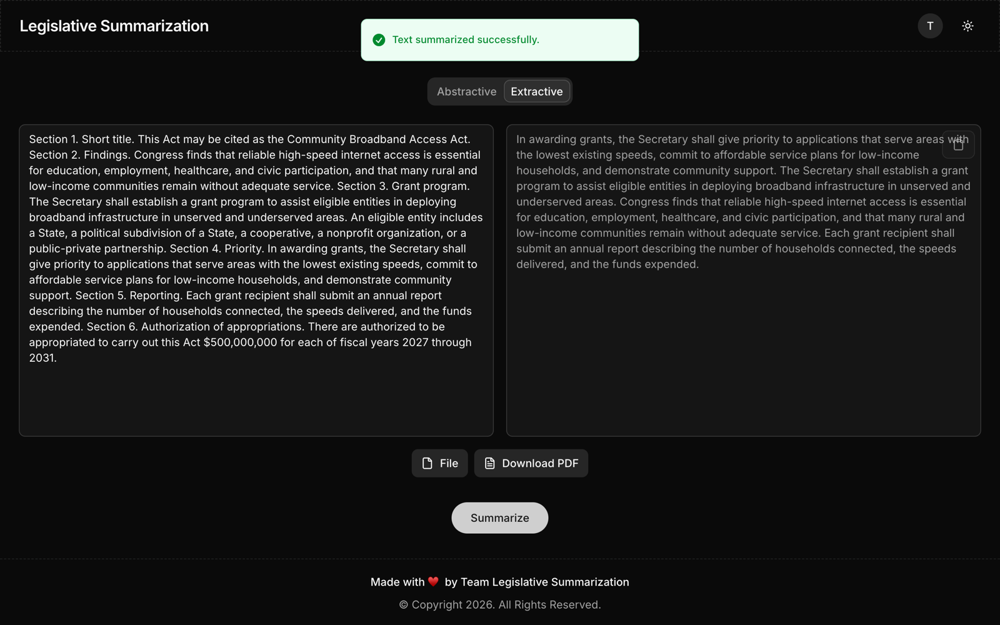

Archived. I built this in college while learning web development, and it has served its purpose. The live app is down and the project is no longer maintained.
Legislative Summarization
Summarize legal documents with the help of AI, and save time and effort.
Features
- Summarize pasted text or an uploaded PDF or plain-text document
- Extractive and abstractive summaries, the latter from a BART model fine-tuned on LegalSum
- Export summaries to PDF, and keep a history of past ones
- Accounts with email OTP verification, password reset and account deletion
- Dark and light themes
Stack
- Frontend: Next.js, React, TypeScript, Tailwind
- API: Bun and Express for auth (JWT) and storage, Gemini for detailed summaries
- Model server: FastAPI serving the legal-bart-summarizer model with Hugging Face Transformers and NLTK
- Storage: PostgreSQL with Prisma
- Auth: JWT sessions
Setup
-
Containers: one image per service, built
from Dockerfiles.
docker-compose upruns the whole stack locally. - CI/CD: a GitHub Actions workflow builds multi-arch images (amd64/arm64) with SBOMs, pushes them to GHCR, then commits the new image tags to the k8s manifests.
- Kubernetes: Kustomize manifests for the three services, secrets stored as SealedSecrets, a PVC for the model cache, and an HTTPRoute behind a Traefik gateway.
- Network policies: default-deny with explicit allows. Only the gateway reaches the frontend and API, only the API reaches the model server and PostgreSQL, and egress is limited to DNS and the few external services each pod needs (mail, Gemini, model downloads).
Screenshots





